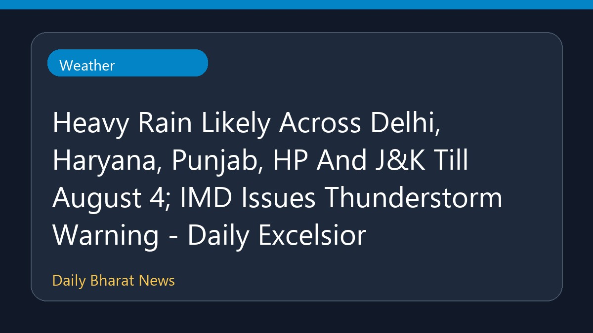

दिल्ली, हरियाणा, पंजाब, हिमाचल और जेएंडके में भारी बारिश की संभावना

मौसम विभाग के अनुसार दिल्ली, हरियाणा, पंजाब, हिमाचल प्रदेश और जम्मू-कश्मीर में चार अगस्त तक भारी बारिश होने की संभावना है। इस संबंध में मौसम विभाग (IMD) ने गरज के साथ छींटे पड़ने और आंधी की चेतावनी जारी की है। संबंधित क्षेत्रों में मौसम की स्थिति को देखते हुए लोगों को सतर्क रहने की सलाह दी गई है। इस अवधि के दौरान लगातार वर्षा से जनजीवन प्रभावित हो सकता है। सटीक और विस्तृत जानकारी के लिए स्थानीय मौसम अपडेट पर नजर बनाए रखें।